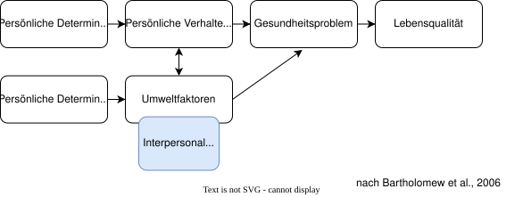

Arbeitsblatt: Brainstorming zur Bedarfsanalyse
Modul 08-006-0007 — Seminar: Psychologische Interventionen
Hausarbeitsthemen 1 und 4
Einleitung und Zielstellung
Dieses Arbeitsblatt unterstützt euch dabei, Schritt 1 des Intervention Mapping (die Bedarfsanalyse) sauber für eure Hausarbeit vorzubereiten. Ihr könnt die Aufgaben in der Gruppe aufteilen. Bearbeitet anschließend die Checkliste am Ende zusammen. Auch für Hausarbeitsthemen 2 und 3 lässt sich die Logik von Intervention Mapping - auf den Kontext angepasst - anwenden.
Vorentlastung: Überfliegt nochmals den Artikel von Svendsen et al. (2022). Wie wurde hier die Bedarfsanalyse gemacht?
Svendsen, M. J., Sandal, L. F., Kjær, P., Nicholl, B. I., Cooper, K., Mair, F., Hartvigsen, J., Stochkendahl, M. J., Søgaard, K., Mork, P. J., & Rasmussen, C. (2022). Using intervention mapping to develop a decision support system–based smartphone app (selfBACK) to support self-management of nonspecific low back pain: Development and usability study. Journal of Medical Internet Research, 24(1), e26555. https://doi.org/10.2196/26555
Aufgaben und Leitfragen für euer Gruppen-Brainstorming
Aufgabe 1: Partizipation und die Planungsgruppe
Frage: Wen bezieht ihr noch in eure Planungsgruppe ein? Wie bindet ihr die Zielgruppe selbst oder wichtige Vermittlerpersonen (Intermediäre wie Lehrer, Eltern, Trainer oder den Betriebsrat) ein, um die Bedarfsanalyse abzusichern?
Eure Notizen:
Aufgabe 2: Zielgruppe, Gesundheitsproblem und Lebensqualität
Frage: Wer genau ist eure Zielgruppe und unter welchem spezifischen Gesundheitsproblem leidet sie? Wie schränkt dieses Problem die gesundheitsbezogene Lebensqualität im Alltag ein?
Eure Notizen:
Aufgabe 3: Verhaltens- und Umweltursachen
Frage: Welche konkreten Verhaltensweisen der Personen (z. B. langes Sitzen, Medienkonsum) und welche Faktoren in deren Umwelt (z. B. fehlende Grünflächen, mangelnde Sportangebote, familiäre Barrieren) verursachen das Gesundheitsproblem?
Eure Notizen:
Aufgabe 4: Determinanten und Ressourcen
Frage: Warum zeigen die Personen dieses Risikoverhalten (Determinanten wie mangelnde Selbstwirksamkeit oder fehlendes Wissen)? Welche Stärken und Ressourcen (materielle Mittel, Motivation, Zusammenhalt) bringt die Zielgruppe aber gleichzeitig schon mit?
Eure Notizen:
Aufgabe 5: Bewertung und Priorisierung
Frage: Wenn ihr eure gesammelten Verhaltens- und Umweltfaktoren nach Relevanz (Wie wichtig für die Gesundheit?) und Veränderbarkeit (Wie leicht können wir das durch eine Intervention ändern?) bewertet: Auf welche zwei bis drei Hauptfaktoren konzentriert ihr euch? Die Bewertung kann matrixartig erfolgen - mit Relevanz auf einer Achse und Veränderbarkeit auf der anderen Achse. (Ihr könnt in einer Hausarbeit nicht alle Probleme auf einmal lösen. Konzentriert euch auf die Faktoren, die sowohl wichtig als auch gut veränderbar sind. Sonst wird es zu umfangreich.) Idealerweise Orientiert euch bei der Bewertung an empirischer Evidenz aus der Literatur (z. B. Odds Ratios oder Effekstärken).
📋 Mini-Beispiel zur Orientierung: Priorisierungs-Matrix
| Faktoren (Verhalten & Umwelt) | Relevanz | Veränderbarkeit | Evidenz (Literatur/Fallarbeit) |
|---|---|---|---|
| Ebene: Kinder (Zielgruppe) | |||
| * Geringe Selbstwirksamkeit | +++ | ✓ | \(d = 0.58\) (starker Prädiktor) |
| * Objektiv unsicherer Schulweg | +++ | ✗ | Nicht durch Schulprojekt veränderbar |
| Ebene: Schule / Lehrkräfte | |||
| * Lehrkräfte-Norm (“ruhige Pause”) | ++ | ✓ | Aus Interview im Fallbeispiel |
Legende: +++ = sehr relevant, ++ = relevant, + = weniger relevant | ✓✓ = sehr leicht veränderbar, ✓ = veränderbar, ✗ = nicht veränderbar
Eure eigene Priorisierungs-Tabelle:
| Faktoren (Verhalten & Umwelt) | Relevanz | Veränderbarkeit | Evidenz (Eure Quellen/Befunde) |
|---|---|---|---|
Aufgabe 6: Theorie
Frage: Bei Saskia habt ihr verschiedene Modelle der Verhaltensänderung kennengelernt (siehe Präsi der ersten LV unter “Modelle der Verhaltensänderung”). Welche dieser Theorien könnt ihr heranziehen?
Eure Notizen:
Aufgabe 7: Das logische Modell des Problems & Programm-Ziel
Frage: Wie sieht die logische Kette eures Problems aus? Welches konkrete Gesamtziel (Wer verändert was, wann und um wie viel?) formuliert ihr für das Ende eurer Intervention? (Eine Vorlage für das logische Modell für draw.io findet ihr auf der Kurswebsite.)
Eure Notizen:

Eure Checkliste für die Hausarbeit
Geht die Punkte in eurer Gruppe am Ende durch. Könnt ihr überall ein Kreuz setzen?
Hausarbeitsthemen 2 und 3
Einleitung und Anpassung der Logik des Intervention Mappings
Da ihr bei den Themen 2 (Konfliktmanagement/Gruppenführung) und 3 (Motivation/Adhärenz) mit einer bereits bestehenden Gruppe in einem Fallbeispiel arbeitet, verändert sich der Fokus eurer Bedarfsanalyse: Ihr analysiert die akuten psychosozialen Störungen, Barrieren und Dynamiken im Kursverlauf. Die Logik des Erkennens und Priorisierens bleibt jedoch genau gleich.
Aufgaben und Leitfragen für euer Gruppen-Brainstorming
Aufgabe 1: Akteure
Frage: Wer sind die Schlüsselpersonen in eurem Fallbeispiel? Welche Rolle spielen die Gruppenleitung (als Steuerungsinstanz) und die einzelnen Teilnehmenden (z. B. Herr K., Frau M. oder Jessica) als Akteure im Konflikt- oder Motivationsgeschehen?
Eure Notizen:
Aufgabe 2: Das psychosoziale Kernproblem der Gruppe
Frage: Was genau stört den Interventionserfolg im Fallbeispiel?
Eure Notizen:
Aufgabe 3: Verhaltens- und Umweltursachen im Kursraum
Frage: Welche konkreten Verhaltensweisen der Beteiligten (z. B. verbale Angriffe, Rückzug, unregelmäßige Teilnahme) und welche Umweltfaktoren (z. B. Leistungsdruck im Kurs, fehlende soziale Unterstützung, ungünstige Übungsgestaltung) befeuern das Problem?
Eure Notizen:
Aufgabe 4: Psychologische Determinanten und Ressourcen der Gruppe
Frage: Warum verhalten sich die Personen im Fallbeispiel so (z. B. Angst vor Kontrollverlust, mangelnde Selbstwirksamkeit, Frustration von Grundbedürfnissen)? Welche Ressourcen (z. B. sportliche Vorerfahrungen, Einsicht, Zusammenhalt anderer Teilnehmer) sind dennoch da?
Eure Notizen:
Aufgabe 5: Bewertung und Priorisierung der Baustellen
Frage: Welche Verhaltens- oder Rahmenfaktoren im Fallbeispiel müsst ihr als Gruppenleitung zuerst angehen? Bewertet nach Relevanz (Wie stark gefährdet es den Kurs?) und Veränderbarkeit (Wie gut könnt ihr es im Kursalltag steuern?).
Eure Priorisierungs-Tabelle für den Gruppenkontext:
| Problemfaktor (Verhalten / Struktur) | Relevanz | Veränderbarkeit | Begründung aus dem Fallbeispiel |
|---|---|---|---|
Aufgabe 6: Theorieauswahl für die Fallarbeit
Frage: Welche Modelle passen am besten auf eure Dynamik? .
Eure Notizen:
Aufgabe 7: Das konkrete Interventions- oder Führungsziel
Frage: Welches klare, psychosoziale Ziel setzt ihr für die Gruppe oder die Einzelperson bis zum Ende des Kurses? (z. B. „Person X wendet wöchentlich feste Wenn-Dann-Pläne zur Überwindung seiner Barrieren an“).
Eure Notizen: